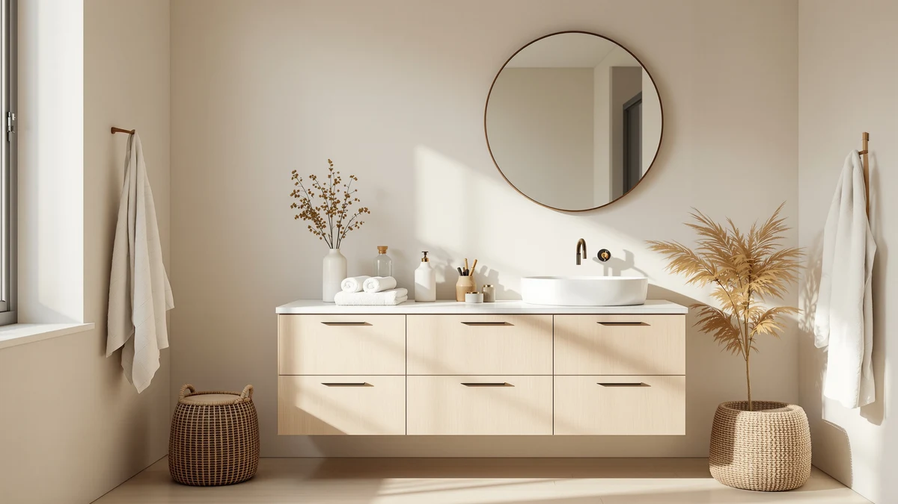

Quick Answer
This Chyanmoo 48 inch bathroom review found that the Chyanmoo 48 Inch Bathroom Vanity delivers a 48 inch single-sink cabinet in MDF and engineered wood, with the sink top included, for $512.98. That undercuts the CozyHommie by about $7 and lands close to the T4TREAM and AMERLIFE, though none of the four options compared here has built up a verified Amazon rating yet except the T4TREAM.
Our pick: Chyanmoo 48 Inch Bathroom Vanity — $512.98 Check Price on Amazon
Things to Know Before You Buy
- Price range: the four vanities covered in this Chyanmoo 48 inch bathroom review span $499.99 to $519.99, a gap of $20.
- The Chyanmoo's cabinet is built from MDF and engineered wood, sized 48 inches with an integrated sink top included in the listing.
- Only the T4TREAM has a public track record among the four: 4.2 stars across 50 verified reviews.
- The Chyanmoo, the CozyHommie, and the AMERLIFE haven't published a review count yet on Amazon, so we evaluate those three on specs and price alone.
- Every price below reflects the listing at the time of writing and can shift, so check the current Amazon price before you buy.
This Chyanmoo 48 inch bathroom review looks at whether the Chyanmoo 48 Inch Bathroom Vanity is worth $512.98 next to three close-priced alternatives in the same 48 to 60 inch range. Most shoppers comparing vanities at this width run into the same problem: product photos look nearly identical, and the real differences only show up once you read past the marketing copy into materials, dimensions, and whatever review history a listing has built up. The Chyanmoo sits in the middle of this group on price, built from MDF and engineered wood with an integrated 48 inch sink top, and it currently has no public rating on Amazon, which matters for how confidently you can buy it without seeing it in person first.
The short version from this Chyanmoo 48 inch bathroom review: the Chyanmoo costs less than the CozyHommie and sits close to the T4TREAM and AMERLIFE on price, but it's the T4TREAM that carries the only verified track record among the four, with 4.2 stars across 50 reviews. If an established rating matters more to you than saving a few dollars, that difference is worth weighing before you add anything to your cart. We break down what each vanity actually offers, including where the Chyanmoo comes up short on review history, in the sections below.
Why You Should Trust Us
Ilane Tall covers bathroom fixtures and furniture for Best Bathroom Vanities and put together this Chyanmoo 48 inch bathroom review by comparing manufacturer specs, current Amazon pricing, and verified buyer feedback instead of repeating marketing copy. We do not run a fake testing lab or claim to have installed any of these vanities ourselves. Instead, we cross-check listed dimensions, materials, and pricing against whatever owner feedback exists for each listing, and we say so plainly when a product, like the Chyanmoo, doesn't yet have enough review data to support a confident recommendation either way. That distinction matters in the vanity category, where glossy product photos rarely tell you how a cabinet or a sink basin holds up after a year of daily use.
Our Research Experience
This review doesn't involve physical testing. We compared the Chyanmoo 48 Inch Bathroom Vanity against the CozyHommie, T4TREAM, and AMERLIFE using each listing's stated materials, dimensions, and pricing, then checked those claims against verified owner reviews wherever a product has collected enough of them. For the T4TREAM, that meant reading through its 50 verified ratings to see what came up more than once. The Chyanmoo, the CozyHommie, and the AMERLIFE haven't built up a public review count yet, so for those three we relied on the manufacturer's listed specs and current pricing alone, and we flag that gap wherever it affects the recommendation. This Chyanmoo 48 inch bathroom review treats a missing rating as a real limitation rather than glossing over it, because a sink and cabinet you'll use daily deserves more than a product photo's word for how it holds up.
Overview & Specs

Chyanmoo 48 Inch Bathroom Vanity
What we like
- Combines a 48 inch cabinet and sink top in one listing, so you're not sourcing a basin separately
- Priced at $512.98, the second-lowest of the four vanities compared in this review
- MDF and engineered wood construction keeps the price down compared to solid-wood alternatives like the CozyHommie
Flaws but not dealbreakers
- No public rating or review count yet on Amazon, so early buyers are relying on the listing alone
- MDF and engineered wood is more moisture-sensitive over time than the CozyHommie's solid wood build
- Single-sink 48 inch layout won't suit a bathroom where two people need separate basins, unlike the T4TREAM
| Material | MDF / engineered wood |
| Size | 48 inch with sink |
The Chyanmoo 48 Inch Bathroom Vanity anchors this Chyanmoo 48 inch bathroom review because it's the product most readers searching this exact listing want evaluated first. At $512.98, it undercuts the CozyHommie by about $7 and lands within $13 of the T4TREAM and AMERLIFE, all while delivering a complete 48 inch cabinet and sink combo rather than a bare cabinet you'd need to pair with a separate top. The cabinet is built from MDF and engineered wood, a construction choice that keeps the price down compared to the CozyHommie's solid-wood build but asks for more care around standing water near the sink basin. For a 48 inch single-sink bathroom where budget and integrated plumbing matter more than a premium material upgrade, that trade-off is a reasonable one.
Where the Chyanmoo comes up short is track record. Unlike the T4TREAM, which has 4.2 stars across 50 verified ratings, the Chyanmoo hasn't accumulated a public review count on Amazon yet, so you're judging it on the listed specs and price rather than years of owner feedback. That's not unusual for a newer listing in this category, but it does mean you're taking the manufacturer's word on fit and finish until more buyers weigh in. If you've got a tight 48 inch footprint and want the sink included in the box, the Chyanmoo's price makes it worth a look. If an established rating matters more to you before you commit over $500 to a vanity, the T4TREAM below is the safer bet on paper.
What We Liked
Across this Chyanmoo 48 inch bathroom review, the Chyanmoo's main strength is simplicity: a 48 inch cabinet and sink top sold as one listing for $512.98 means you're not separately sourcing a basin that fits the cabinet's cutout, a mismatch that trips up a surprising number of vanity installs. It also undercuts the CozyHommie on price while staying within striking distance of the T4TREAM and AMERLIFE, so budget-conscious shoppers aren't giving up much by choosing it. The MDF and engineered wood build keeps manufacturing costs down, which is part of why the Chyanmoo prices in below three of its closest competitors despite covering the same 48 inch footprint.
What Could Be Better
The clearest gap is review history. Because the Chyanmoo hasn't built up a public rating or review count on Amazon, you can't lean on dozens of owner comments the way you can with the T4TREAM's 50 verified ratings, so part of the buying decision rests on trusting the manufacturer's stated materials. MDF and engineered wood construction also asks for more diligence around standing water near the sink basin than solid wood does, which matters in a bathroom that sees daily splashes. Shoppers who want proof of how a finish holds up after a year of use won't find that here yet, because the listing hasn't been on the market long enough to generate it.
Who Is It For?
Based on this Chyanmoo 48 inch bathroom review, the Chyanmoo fits a single-user 48 inch bathroom where you want a complete cabinet-and-sink combo at the lowest price among the four options compared here. It's a reasonable match for a budget remodel where integrated plumbing and a straightforward install matter more than a verified track record. It's a weaker fit if two people share the sink daily, since the T4TREAM's double-basin layout handles that better, or if you'd rather buy a vanity with an established public rating before committing over $500. Buyers who want solid wood over engineered wood may also prefer the CozyHommie despite its slightly higher price.
Alternatives to Consider
If the Chyanmoo doesn't fit your bathroom, these three alternatives from this Chyanmoo 48 inch bathroom review cover different priorities: solid-wood construction, a double-sink layout with a verified rating, and a wider farmhouse-style footprint.

Editor’s Pick
CozyHommie Solid Wood RTA 42"
A solid-wood, ready-to-assemble 42 inch vanity for $519.99, about $7 more than the Chyanmoo, for shoppers who'd rather avoid MDF construction near a sink basin even if it means assembling the cabinet themselves.
$519.99
Check Price on Amazon
Best Value
T4TREAM 48" Bathroom Vanity Double
The only alternative here with a public track record: 4.2 stars across 50 verified reviews, plus a double-sink 48 inch layout for bathrooms where two people share the counter every morning, priced at $499.99.
$499.99
Check Price on Amazon
Premium Choice
AMERLIFE 60” Farmhouse Bathroom Vanity
A wider 60 inch farmhouse-style vanity at $499.99, the lowest price of the group, for a bathroom with the extra 12 inches of wall space the Chyanmoo's 48 inch footprint doesn't need.
$499.99
Check Price on AmazonFrequently Asked Questions
How much does the Chyanmoo 48 Inch Bathroom Vanity cost?
In this Chyanmoo 48 inch bathroom review, the Chyanmoo lists for $512.98, which makes it the second-lowest-priced of the four 48 to 60 inch vanities compared here. The T4TREAM and AMERLIFE both come in slightly lower at $499.99, while the CozyHommie runs about $7 higher at $519.99. All four prices reflect the listings at the time of writing and can shift, so check current Amazon pricing before you order.
Does the Chyanmoo 48 Inch Bathroom Vanity have a public rating?
No, not yet. Among the four vanities in this Chyanmoo 48 inch bathroom review, only the T4TREAM has a published track record, with 4.2 stars across 50 verified reviews. The Chyanmoo, the CozyHommie, and the AMERLIFE haven't collected enough reviews on Amazon to show a public rating, so buyers are currently relying on the listed specs rather than owner feedback for those three.
Is MDF or engineered wood durable enough for a bathroom vanity sink?
It can be, as long as you wipe up standing water around the basin promptly. The Chyanmoo's MDF and engineered wood cabinet, like most vanities at this price, holds up fine under normal bathroom humidity but swells faster than the CozyHommie's solid wood build if water sits on the surface for hours at a time. Good ventilation and a properly sealed top minimize most of that risk.
Final Verdict
This Chyanmoo 48 inch bathroom review comes down to whether price and an integrated sink top matter more to you than a verified track record. The Chyanmoo 48 Inch Bathroom Vanity is the pick for a budget-conscious single-sink remodel, since it bundles the cabinet and basin into one $512.98 listing and undercuts the CozyHommie on price. It loses ground on review history, since the listing has no public rating yet, which is where the T4TREAM's 4.2-star record or the wider AMERLIFE farmhouse style become worth considering instead. Whichever vanity you choose, confirm the current price and stock before ordering, since listings in this category shift more often than the pages covering them get updated.